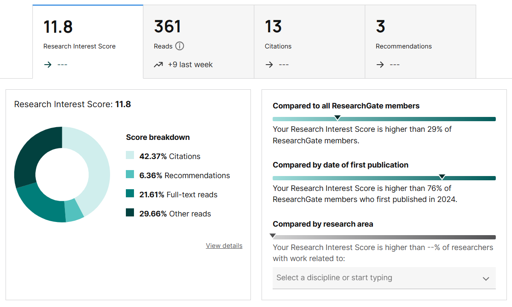
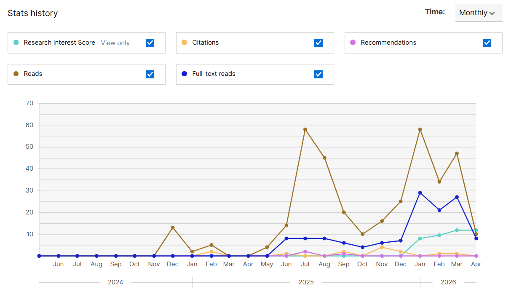

Saad Ahmed
Lecturer, Dept of CSE
Bangladesh Army University of Science and Technology (BAUST)
0
Citations
0
h-index
0
i10-index
Research Interests: Image Processing, Computer Vision, and Deep Learning.

